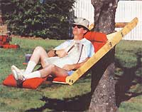
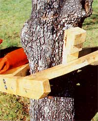
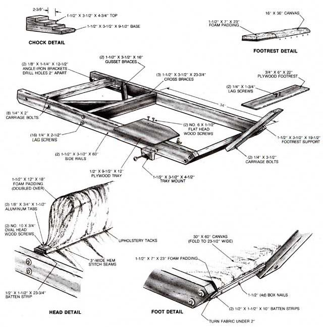

There's nothing like getting a head start on summer, especially when doing so will help you avoid work in the months to come. And, what could be more inviting in summertime than a comfortable, full-length lawn chair that's always in the shade and doesn't even need to be moved when you're contemplating cutting the lawn?
MOTHER staffer Dennis Burkholder came up with this tree-mounted recliner last summer, and it was immediately dubbed the "Burkalounger." As you can see from the photos, it requires little more than a moderately substantial trunk (from 6" to 18" in diameter) and a willing occupant. Mounted at or above waist level, it allows enough room underneath for an occasional pass with a lawnmower.
Part of the beauty of this yard lounger is that most folks probably already have much of what it takes to put one together. The wooden frame is made of knot-free 2 X 4s, and the fabric is medium-weight awning canvas (though a synthetic such as nylon would be virtually rot resistant). Some batten strips and plywood scraps are also needed, as well as an assortment of nails and other fastening hardware. The head and foot padding can be salvaged from old foam pillows or purchased as scraps.
To assemble it, you'll need a tape measure, a handsaw, a drill with a few different sizes of bits, a hammer, and several minutes with a sewing machine. The main thing to keep in mind when putting the framework together is to pitch the cross brace at the foot forward at a 45° angle and to mount the middle brace 34" from it. The two gusset braces are set diagonally at 45° to connect the side rails and the center brace.
Before bolting the footrest support in place, you'll need to fasten the fabric to the lower cross brace . . . but first fold both long edges of the canvas over once to make the piece 23-1/2" wide, then stitch a seam about 3" in from each edge. With that done, place one end of the fabric fold-down against the outer surface of the lower cross brace, turning un der a 2" wide hem (see illustration). Secure that doubled-over section with the two 10" batten strips and some box nails, leaving enough room between the strips to secure the footrest support. Stuff one of the 7" X 23" foam blocks between the fabric and the lower cross brace, gluing it to the wood if you wish. Then extend the canvas seat to the center brace, allowing it to sag slightly. Secure the fabric to the upper edge of the board with the long batten strip, then fold the loose flap over the doubled piece of 12" X 18" foam padding and fasten the edge of the flap to the face of the batten with upholstery tacks to form a pillow. Finish by capturing the cor ners under the aluminum tabs as shown.
After the footrest is fastened to its support with lag screws, the last piece of foam can be glued to the wooden surface and the fabric tacked from below. If you wish, you can add the drink tray to one of the side rails as well. The angle-iron brackets that hold the upper cross brace should be positioned on the rails so the brace is flush with the sides' upper surfaces . . . and be sure to drill the adjustment holes an equal distance apart on both brackets so the brace bolts will slip into place easily. (Wing nuts on these four fasteners make adjustment a fingertip task.)
Mounting the lounger to your favorite tree is simply a matter of removing the upper brace and placing the "fork" at the head of the chair around the trunk. With the cross brace refastened to the brackets, the braces will grip the tree as the chair tilts downward under the weight of its occupant. (For minor adjustments, we've also illustrated a stepped 2 X 4 chock which fits between the brace and the trunk to take up unwanted slack.)
Of course, to preserve the wood you'll want to coat it with polyurethane or some other water-resistant finish before seeking a tree with lots of shade . . . then you can allow yourself plenty of time to contemplate your next move.
|
 STAFF PHOTO The Burkalounger grips the tree between its two diagonal braces and a cross brace. The chock block makes up for adjustments in between those provided by the brackets. |
 |
 |